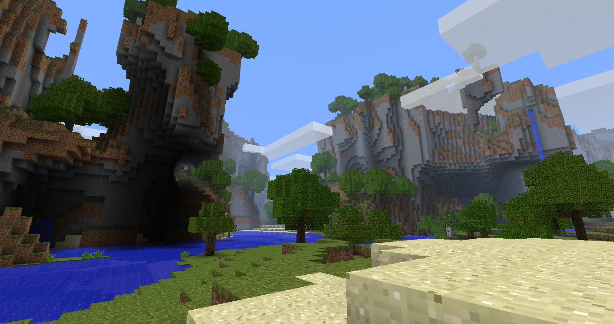

BetaSharp is a C# rewrite of Minecraft Beta 1.7.3. It plays just like the version you remember, but runs a lot smoother and has a few extras thrown in. It's free and open source.
What's different?
- Modern C# codebase. Rewritten from legacy Java to C# on .NET 10, for better performance and a much nicer codebase to work on.
- Faster rendering. Multithreaded chunk meshing, frustum and occlusion culling, and an overhauled OpenGL rendering pipeline.
- Microsoft login. BetaSharp comes with its own launcher that signs in with your Microsoft account.
- Custom effects. New visuals that keep the retro charm, like chunks fading in and waving leaves.
- Quality of life. Controller support (Xbox, PlayStation, Steam Deck, etc.) and more.
Please note: BetaSharp requires a legally purchased copy of Minecraft. We do not
support or condone piracy. You can buy Minecraft at
minecraft.net.